In this document we discuss the implementation of segregated solution strategies for multi-physics problems, in particular fluid-structure interaction, within oomph-lib. The method illustrated by revisiting the fluid-structure interaction problem of finite-Reynolds-number flow in a 2D collapsible channel; an example discussed in detail in
where we compare the relative performance of segregated and monolithic solvers. Since the paper comes to the conclusion that, despite various claims in the literature, segregated solvers are not necessarily more efficient than fully-coupled monolithic schemes (of the type employed in oomph-lib) you should also consult the related tutorial on the monolithic solution of the problem with oomph-lib's FSI preconditioner.
The problem
The figure below shows a sketch of the problem: Flow is driven by a prescribed Poiseuille flow 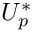 through a 2D channel of width 
Sketch of the problem. The non-dimensionalisation and governing equations have already been discussed in the previous (monolithic) example. The problem is not quite the same, however, because the upstream boundary condition is now one of prescribed flow, rather than prescribed pressure:
All other boundary conditions remain the same. |
 and total length 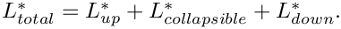 The upstream and downstream lengths of the channel are rigid, whereas the upper wall in the central section is an elastic membrane whose shape is parametrised by a Lagrangian coordinate, 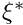 , so that the position vector to the moving wall is given by
and total length 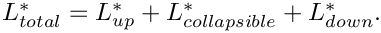 The upstream and downstream lengths of the channel are rigid, whereas the upper wall in the central section is an elastic membrane whose shape is parametrised by a Lagrangian coordinate, 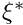 , so that the position vector to the moving wall is given by  . The wall is loaded by the external pressure 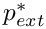 and by the traction that the viscous fluid exerts on it.
. The wall is loaded by the external pressure 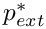 and by the traction that the viscous fluid exerts on it.Results
The behaviour of the system under the prescribed-inflow boundary conditions is somewhat different to its behaviour when the pressure drop is prescribed. In the first instance, we consider steady states, in which all time-derivatives are neglected. The figure below shows steady flows at a Reynolds number of 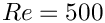 and two values of the fluid-structure-interaction parameter, 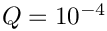 (upper) and 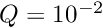 (lower). For low values of  , corresponding to weak fluid-structure interaction, the deformation of the wall is approximately symmetric, being dominated by the external pressure. As increases, the influence of fluid traction can been seen in the asymmetric deformation of the elastic wall. The viscous pressure drop along the tube leads to higher pressure upstream (causing an outward deformation) and lower pressures downstream (causing an inward deflection).
, corresponding to weak fluid-structure interaction, the deformation of the wall is approximately symmetric, being dominated by the external pressure. As increases, the influence of fluid traction can been seen in the asymmetric deformation of the elastic wall. The viscous pressure drop along the tube leads to higher pressure upstream (causing an outward deformation) and lower pressures downstream (causing an inward deflection).
The overall behaviour of the system can be characterised by steady load-displacement curves in which the vertical position of a control point on the elastic section of the channel wall is plotted as a function of the external pressure.

At low , the displacement is directly proportional to the external pressure. As increases the curves shift to the right because a large external pressure is required to keep the wall in its undeformed position;
a consequence of the increased viscous pressure drop and the boundary condition that 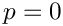 at the outlet. A second consequence of increasing is that (at finite Reynolds number) a smaller increase in external pressure is required to achieve a given degree of collapse. This is because the Bernoulli effect reduces the fluid pressure in the region that is most strongly collapsed and therefore increases the compressive load on the wall. For 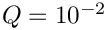 two limit points develop on the load-displacement curve, indicating that the wall "snaps through" into a collapsed buckled configuration when  becomes sufficiently large. The appearance of the limit points means that it is no longer possible to perform the steady parameter study by slowly increasing 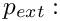 At sufficiently large values of the displacement of the control point is not a single-valued function of the external pressure
becomes sufficiently large. The appearance of the limit points means that it is no longer possible to perform the steady parameter study by slowly increasing 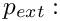 At sufficiently large values of the displacement of the control point is not a single-valued function of the external pressure  . However, the application of "displacement control", described in the tutorial discussing the large-displacement post-buckling of an elastic ring is sufficient to circumvent this difficulty: We treat the external pressure as an unknown and control the channel's collapse by prescribing the vertical position of the control point, 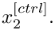 This resolves the problem because the curve 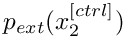 is single-valued, allowing us to perform the parameter study by slowly increasing the wall collapse by reducing 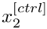, computing the pressure required to achieve this deformation as part of the solution.
. However, the application of "displacement control", described in the tutorial discussing the large-displacement post-buckling of an elastic ring is sufficient to circumvent this difficulty: We treat the external pressure as an unknown and control the channel's collapse by prescribing the vertical position of the control point, 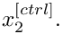 This resolves the problem because the curve 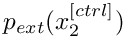 is single-valued, allowing us to perform the parameter study by slowly increasing the wall collapse by reducing 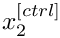, computing the pressure required to achieve this deformation as part of the solution.
Overview: Segregated solution strategies with oomph-lib
The general methodology for setting up fluid-structure-interaction problems is discussed in another tutorial; and we shall assume that the standard monolithic problem has already been written. In the present example, the monolithic problem class FSICollapsibleChannelProblem is specified in the header file fsi_chan_problem.h
Having specified the monolithic (fully-coupled) discretisation, our segregated solution strategy proceeds by alternating between fluid and solid solves: Initially, the degrees of freedom associated with the (pure) solid mechanics problem are "pinned" and the global assembly procedure is modified to omit the corresponding solid elements. The Newton solver will, therefore, solve the fluid equations with a "frozen" wall shape. Next, the degrees of freedom associated with the (pure) fluid mechanics problem are pinned and the original boundary conditions for the solid mechanics problem are re-assigned. The assembly procedure is now modified so that only solid elements contribute to the global system. The Newton solver will then solve for a new wall shape corresponding to the tractions exerted by the given flow field. At this point we allow for under-relaxation, i.e. we provide the option to increment the solid mechanics degrees of freedom by a fraction of the change computed by the Newton solver. These two steps are repeated in a fixed-point iteration which continues until a given convergence criterion is satisfied, or a maximum number of iterations is exceeded. We note that different linear solvers/preconditioners may be specified for solution of the linear systems arising during the Newton iteration for the isolated "fluid" and "solid" problems, allowing the re-use of optimal solution methods for individual sub-problems. This is generally perceived to be one of the key advantages of segregated solvers.
Brief discussion of the implementation
The SegregatableFSIProblem
a. Overall structure
The SegregatableFSIProblem class is used to implement our segregated solution strategy within oomph-lib. The most important problem-specific task is to divide all the problem data into distinct fluid and solid degrees of freedom and to partition the monolithic mesh into a mesh of fluid elements and a mesh of solid elements. The problem-specific partitioning should be implemented in the (pure) virtual member function
which returns vectors of fluid and solid data and the meshes of fluid and solid elements. This virtual function is called within the member function
which must be called immediately before every segregated solve. The optional boolean flag may be set to false if the solid and fluid meshes have not changed between solves (i.e. if no spatial adaptation was performed since the last call to the segregated solver). The setup_segregated_solver(...) function must still be called, however, in order that data associated with convergence acceleration techniques is reset to its default values.
b. The segregated solvers
The class inherits from the standard Problem class, which provides the standard (monolithic) newton_solve() and related functions. Thus any SegregatedFSIProblem can be solved "monolithically" as normal and, moreover, it is straightforward to ensure that exactly the same system is being solved when comparing monolithic and segregated solutions. The segregated solution strategy is implemented in the analogous member functions:
- The equivalent of the monolithic
Problem::newton_solve()isSegregatedFSIProblem::segregated_solve(); - The equivalent of the monolithic
Problem::steady_newton_solve()isSegregatedFSIProblem::steady_segregated_solve(); - Finally, the equivalent of
Problem::unsteady_newton_solve(dt)isPicardConvergenceData unsteady_segregated_solve(const double &dt);
All three functions return an instance of a PicardConvergenceData object which stores the convergence statistics of the segregated solve.
In addition, the virtual member functions
are provided to allow the user to specify any actions, such as initialisation of counters, mesh updates, output, etc, that should be performed before or after each complete segregated solve. Note that the Problem member functions
are called as usual during the Newton solve of each sub-problem and may be used for fine-grained operations that should be performed before or after each fluid or solid solve. For this purpose, the SegregatedFSIProblem provides a flag, int SegregatedFSIProblem::Solve_type that indicates which (sub-)solve is currently being performed. The flag can take the (enumerated) values SegregatedFSIProblem::Full_solve, SegregatedFSIProblem::Fluid_solve and SegregatedFSIProblem::Solid_solve, allowing the user to perform specific actions during the distinct sub-solves.
c. Choosing the convergence criterion
Other public member functions provided by the SegregatedFSIProblem class are used to specify the convergence criterion for the global fixed-point iteration:
If a tolerance is not specified the default Problem::Newton_solver_tolerance is used.
d. Under-relaxation
Finally, there are several member functions that are used to specify the convergence-acceleration techniques:
- Static under-relaxation:
If this function is called, under-relaxation is performed after the solid sub-solve, i.e. each solid degree of freedom,//Use under-relaxation for solid degrees of freedom and specify//the optional under-relaxation parameter. The default of 1.0//corresponds to no under-relaxation.void use_under_relaxation (const double &omega=1.0) , say is updated via
, say is updated via 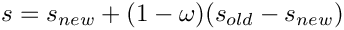
where 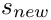 is the new value computed by the Newton solver and 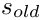 is its previous value. - Adaptive under-relaxation:
If this function is called (and if under-relaxation is enabled) the under-relaxation parameter//Boolean flag that controls whether Irons & Tuck extrapolation//is used to dynamically modify the under-relaxation parameter for//the under-relaxation of the solid degrees of freedom.void enable_irons_and_tuck_extrapolation () is adjusted throughout the fixed-point iteration, using Irons & Tucks convergence acceleration procedure; see Irons, B.M. & Tuck, R.C. "A version of the Aitken accelerator for computer iteration". International Journal of Numerical Methods in Engineering 1, 275-277 (1969).
is adjusted throughout the fixed-point iteration, using Irons & Tucks convergence acceleration procedure; see Irons, B.M. & Tuck, R.C. "A version of the Aitken accelerator for computer iteration". International Journal of Numerical Methods in Engineering 1, 275-277 (1969). - Pointwise Aitken-acceleration:
If this function is called, the classical Aitken extrapolation is used to accelerate the convergence of (individual) solid degrees of freedom after every three iterations.//Set a boolean flag that controls whether pointwise Aitken//extrapolation is used. The optional argument specifies the Picard//Iteration after which the extrapolation is to be used for the first//time. The default value is zero.void enable_pointwise_aitken (const unsigned &pointwise_aitken_start)
The SegregatedFSICollapsibleChannelProblem
We shall now briefly discuss the application of the segregated solver for the collapsible channel problem. The SegregatedFSICollapsibleChannelProblem is defined in the driver code simple_segregated_driver.cc and inherits from the "monolithic" FSICollapsibleChannelProblem and also from the SegregatableFSIProblem class. The code simple_segregated_driver.cc is specifically designed for ease of exposition and does not contain any timing statements or documentation of convergence histories. The alternative driver code fsi_chan_seg_driver.cc contains complete timing and documentation statements and is the code that was used by Heil, Hazel & Boyle (2008).
The simplified SegregatedFSICollapsibleChannelProblem class contains six member functions
- The constructor
- The destructor
voididentify_fluid_and_solid_dofs(...)voidactions_before_newton_convergence_check()voidactions_before_segregated_convergence_check()voidsteady_run()voiddoc_solution(DocInfo& doc_info)
The doc_solution(...) function simply writes the bulk (fluid) elements and wall (solid) elements to two separate files and the destructor is empty. We discuss the other four member functions below.
The constructor
The constructor calls the constructor of the underlying "monolithic" problem and then selects the convergence criterion and convergence-acceleration technique based on the values of control flags defined in the namespace Flags.
Identifying the fluid and solid degrees of freedom
The underlying monolithic problem provides pointers to the fluid and solid (sub-)meshes via the member data
which are accessible via the member functions
SegregatedFSICollapsibleChannelProblem::bulk_mesh_pt() and SegregatedFSICollapsibleChannelProblem::wall_mesh_pt(), and so the identification of fluid and solid degrees of freedom is reasonably straightforward. The only complication arises because we may, or may not, be using displacement control which introduces a further element into the global mesh. Displacement control affects the solid problem suggesting that the (variable) external pressure should be regarded as a solid degrees of freedom and the DisplacementControlElement should be included in the solid mesh.
Actions before convergence checks
During a monolithic solve the function actions_before_newton_convergence_check() must update the nodal positions in the bulk (fluid) mesh. In principle, it should remain empty during a segregated solve, but we found it beneficial to update the bulk mesh, and hence the fluid load on the wall, during the solution of the solid problem.
The function actions_before_segregated_convergence_check() contains an update of the nodal positions in the bulk mesh in order that the segregated solution is self-consistent.
Solving a steady problem
The function steady_run() conducts a simple parameter study in which the external pressure (or prescribed displacement) is varied. After specification of the initial conditions, parameter increments and output directories, the parameter study is straightforward
The driver code
Having written our SegregatedFSICollapsibleChannelProblem, the driver code is extremely simple. We specify number of elements and dimensions of our computational domain, construct the problem and perform a steady parameter study.
Comments and Exercises
Comments
- (In-)efficiency of
setup_segregated_solver()
In our simple example code, we did not employ spatial adaptivity. It is not necessary, therefore, to (re-)identify the fluid and solid degrees of freedom before each solve, the default (safe) behaviour ofsetup_segregated_solver(). Nonetheless, data associated with the techniques used to accelerate the convergence of the Picard iterations must be reset before each segregated solve. In the more complex driver code, a boolean flagboolfull_setupis used as an argument tosetup_segregated_solver()which modifies the behaviour, as indicated below..// Boolean flag used to specify whether a full setup of solid and fluid dofs// is requiredbool full_setup = true;// Parameter study{// Setup segregated solversetup_segregated_solver(full_setup);[...]steady_segregated_solve()[...]//We no longer need a full setup of the dofsfull_setup = false;}
Exercises
- Modify the control flags in
simple_segregated_driver.ccto verify that the monolithic solution is the same (to within finite precision) as the segregated solution. - Modify the control flags in
simple_segregated_driver.ccto investigate the influence of the convergence acceleration techniques and convergence criterion on the segregated solution. Which combination of parameters gives convergence in the fewest Picard iterations? - Investigate the behaviour of the system if the fluid (bulk) mesh is not updated after each Newton step in the solution of the solid problem. Can you obtain converged solutions?
- Write your own
SegregatedFSICollapsibleChannelFlow::unsteady_run()member function that computes the time evolution of the system after a perturbation to the external pressure. Compare your answer with the equivalent member function in the much more comprehensive driver codefsi_chan_seg_driver.ccthat was used in Heil, Hazel & Boyle (2008). .
Source files for this tutorial
- The source files for this tutorial are located in the directory:
demo_drivers/interaction/fsi_channel_seg_and_precond/ - The driver code is:
demo_drivers/interaction/fsi_channel_seg_and_precond/simple_segregated_driver.cc
PDF file
A pdf version of this document is available. \